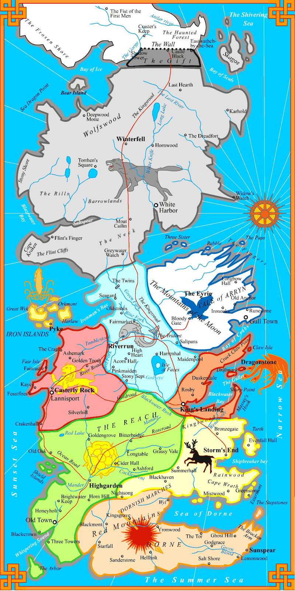

Le Trône de Fer
Guide d'écoute
Tome 1
I
II
III
IV
⛶
☾
♫
Musique d'ambiance
Auto
▶
Change automatiquement avec le chapitre
Position
0:00
0:00
Volume
20%
Givre
Progression
Braise
Où sommes-nous
Agrandir la carte ⤢
Personnages
Créatures
Les grandes maisons
Du Nord glacé au Sud brûlant
⚭
Familles & relations
Stark
Greyjoy
Tully
Arryn
Targaryen
Baratheon
Lannister
MAISON STARK
Rickard Stark †
Brandon †
Lyanna †
Eddard Stark
Catelyn Tully
↗ née Tully
Benjen
Robb
Sansa
Arya
Bran
Rickon
Jon Snow
Bran le Bâtisseur
légende fondatrice, des milliers d'années avant
MAISON GREYJOY
Balon Greyjoy
Theon
↗ pupille des Stark
Asha
Le Roi Gris
légende fondatrice des Îles de Fer
MAISON TULLY
frères
Hoster Tully
Brynden Tully
Catelyn
↗ épouse d'Eddard Stark
Lysa
↗ épouse de Jon Arryn
MAISON ARRYN
Jon Arryn †
Lysa
↗ née Tully
Robin Arryn
Artys Arryn
« le Chevalier Ailé », légende fondatrice du Val
MAISON TARGARYEN
Aerys II †
Rhaegar †
Viserys
Daenerys
Khal Drogo
Aegon le Conquérant
fondateur de la dynastie, ~300 ans avant
MAISON BARATHEON
Robert
Cersei
↗ née Lannister
Renly
Stannis
Joffrey
Orys Baratheon
premier lord Baratheon, ~300 ans avant
MAISON LANNISTER
jumeaux
Tywin Lannister
Cersei
↗ épouse de Robert Baratheon
Jaime
Tyrion
Lann le Rusé
légende fondatrice, conquit Castral Roc par la ruse
mariage
parenté
fils illégitime
Lexique
✎
Notes & marque-page
Notes sur ce chapitre
Marque-page audio (où j'en suis dans Audible)
Guide d'écoute
Le Trône de Fer
Tome 1 · d'après A Game of Thrones
Commencer la lecture
Recommencer le tome (efface la progression)
Zoomer +
Fermer ✕
